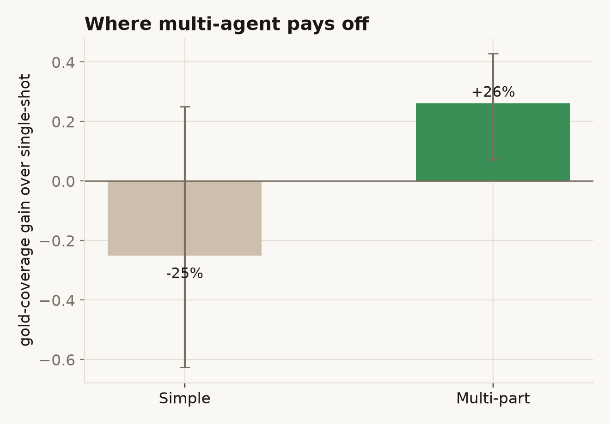

The problem
A single-shot Q&A bot (like its sibling QuoteGuard) does one retrieval and writes one answer. That works for one fact. Real policy questions are rarely one fact: "Is flood covered, and if a storm hits in the same event, how many excesses apply?" is three questions wearing a trench coat. Ask a single pass and it tends to answer the loudest part, gloss the rest, and occasionally assert something the document doesn't actually say.
The interesting question isn't whether an LLM can answer insurance questions. It's whether handing the job to a small team of specialised agents — one to plan, several to research, one to check the work — produces a better, better-grounded answer than one model doing it all at once, or whether it's just more moving parts and more cost for the same result.
What I built
PolicyDesk is a research desk built on LangGraph. Given a question about the Allianz Business PDS, it runs a small org chart:
- A planner splits the question into the minimal set of sub-questions.
- A researcher is spun up for each sub-question (in parallel) to retrieve evidence and draft a page-cited answer.
- A critic reads every draft against its cited evidence and sends weak ones back for revision — a loop, capped so it can't spin forever.
- An editor merges the verified findings into one cited brief; guardrails sit on the way in and out.
It deliberately reuses QuoteGuard's corpus and BM25 retrieval, which let me do the thing that makes this a study rather than a demo: measure the multi-agent desk head-to-head against plain single-shot RAG, same model, same retriever, only the orchestration changes.
Does multi-agent actually win?
Sometimes — and the "when" is the whole point. On multi-part questions the desk covers more of the source material than a single pass (gold-page coverage 57% vs 31%). On simple lookups it does a little worse (38% vs 62%): the planner tends to over-split a one-fact question, and the extra machinery adds ways to go wrong. Both approaches cite their sources equally reliably; the difference is purely how completely they answer.

See the full comparison →Does the critic earn its keep?
Less than I expected, and that's worth saying plainly. The critic does catch drafts that cite nothing or cite a page they never read, and bounces them back. But across the eval the revision loop didn't actually raise grounding (it went 0.84 → 0.83). The reason is instructive: a cheap, deterministic check already blocks fabricated citations before the loop runs, so the extra LLM revision mostly re-words, and occasionally talks a good draft into a worse one. The deterministic guard does the heavy lifting; the LLM critic loop, with a small model, is close to a no-op here.
How the graph and the critic loop work →The headline isn't "multi-agent is better". It's that orchestration is a tool with a cost: it buys grounding and completeness on hard, multi-part questions, and wastes money on easy ones. A sensible system routes by complexity. Watch the desk run →